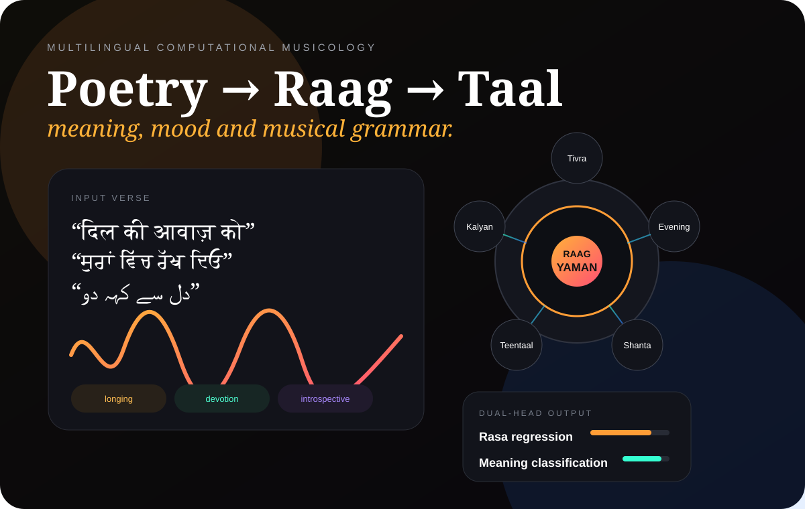

← Selected work
Indic NLP · Computational musicology · Cultural data
MAQAM-AI
A computational-musicology workbench for symbolic score reasoning, formal syllable-to-note alignment and inspectable Raag/Taal exploration.
Evidence status: Public workbench and formal alignment software; constructed-fixture tests support parser and exact-solver behavior, not independent real-world singing alignment accuracy.
Explore code and research notes ↗
Why this
project exists.
Mapping poetry to music is not a simple sentiment-classification task. A verse can carry longing, devotion, restraint and ambiguity at once, while Raag and Taal choices are constrained by cultural grammar rather than only mood similarity.
Preserving cultural structure
Generic embeddings can collapse multilingual nuance into broad positive or negative sentiment. They also risk recommending musical forms without explaining which linguistic, semantic or Rasa evidence supported the decision.
MAQAM-AI treats the task as a structured research problem combining corpus curation, multidimensional targets and explicit musical metadata.
Data and model design
Research boundary
The corpus and architecture create a platform for comparative evaluation, but musical appropriateness cannot be established by automated metrics alone. Expert musician review, inter-rater agreement and culturally diverse listeners are necessary.
The project therefore positions AI as an accountable assistant for composition and exploration—not an oracle replacing musical judgement.
The goal is not to automate taste. It is to make a culturally informed suggestion that a musician can inspect and revise.
Latest evidence snapshot
The November 2026 public repository includes a score adapter that rejects unsupported or ambiguous timing, exact dynamic programming over explicitly supplied formal constraints, a Next.js interface, a Python API, and documented synthetic/constructed tests.
Early source-derived pilots raised important warnings about generalizing formal alignment to real musical annotations. The earlier multilingual Rasa/corpus work is an exploration stream, not an independently verified artist-evaluated model.
An exact formal optimum does not prove a musically correct interpretation.